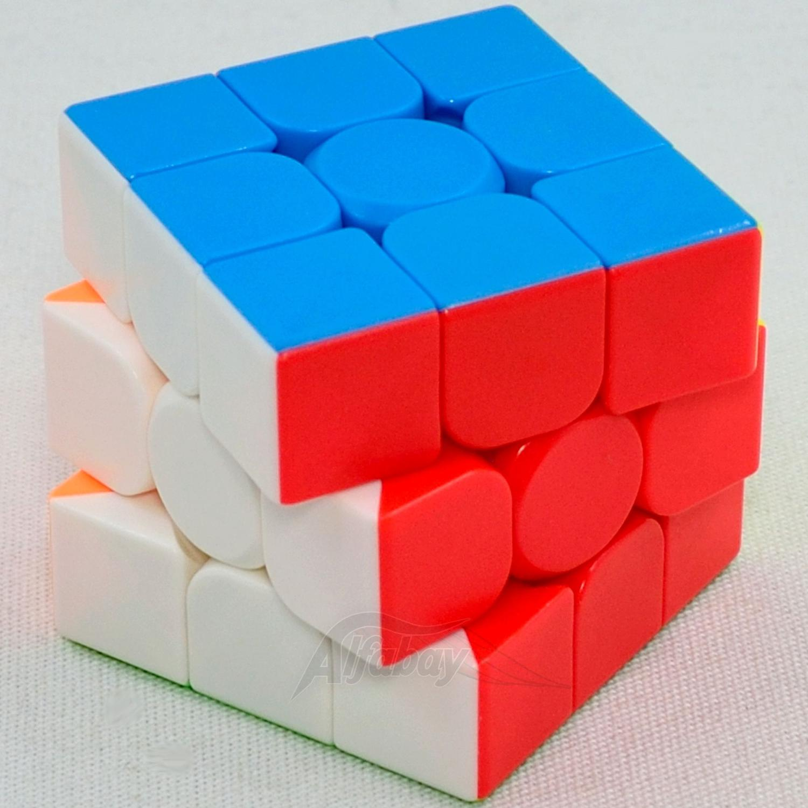

Muitas vezes eu já tentei resolver um cubo mágico, afinal quem nunca né? minha primeira expêriencia eu tinha entre 7 e 8 anos quando comprei um para tentar resolver, porém como já era esperado não saiu resultado nenhum, apenas a frustração de girar, e girar, e girar, e não conseguir chegar em lugar algum. Fui tentar então olhar no youtube pra ver se conseguia de alguma forma achar uma foram de montar, mas mesmo assim com a pouca idade que tinha não consegui "sair do lugar".
Ao decorrer da minha infância e pré adolescência eu tentei montar outras vezes também, mas todas essas tentativas eram falhas, eu nunca conseguia.
Até que chegou o ano de 2021 e eu comecei a estudar a disciplina de Lógica de Programação, que é lecionada pelo professor Marco André. Ele então certo dia contou à turma como ele e sua filha de 9 anos haviam aprendido a montar o tão famoso Cubo Mágico, e eu como sempre tive esse interesse fui logo procurar saber melhor qual método fora usado pelos dois.
Eu então fiz uso de todas as dicas que ele passou de como resolver o cubo. Comecei na segunda-feira(21) quando eu pude pegar o cubo após uma longa semana fora de casa, assistindo primordialmente os vídeos do Rafael Cinoto que ensina a montar o cubo com histórias. A didática dele é muito boa. As historinhas ajudaram a memorizar os movimentos, até que eles ficassem naturais. Na página dele está tudo bem organizado.
No mesmo dia eu cheguei a levar cerca de uns 15 minutos pra chegar até a etapa 5 resolvendo o cubo junto com os vídeos do Rafael, errando algumas vezes, desmontando e montando em outras mas persistindo. Já na terça feira eu consegui concluir o cubo mais de 10 vezes, esquecendo os passos de vez em quando porém no final tudo deu certo, batendo meu recorde de 3 minutos e 55 segundos para montar no final do dia.
Confesso que não indico esse ritmo de aprendizagem pois nos dois dias eu fui dormir um pouco zonzo, mais na segunda feira que foi o primeiro dia. A melhor opção é ir com cautela, eu aconselho ir levando com calma e com no máximo 5 dias é possível aprender a resolver completamente, dessa forma você não cansa tanto a mente e dorme melhor 😅
